xGEO
Live
How to play CLOSE PASS: shadow a Russian inspector satellite in low Earth orbit and make it leave, with no weapons and without starting a war.
Table of contents
Introduction
You fly one US inspector satellite. Another nation's inspector is creeping up on a satellite you protect. Your job is to make it leave, with no weapons and without starting a war.
1.1What kind of game this is
There are no lasers and no explosions in xGEO. Satellites race round the Earth at nearly 8 km/s, but they meet and part slowly, a few metres a second at a time. Every move costs fuel you can never get back. Every look at the enemy depends on where the Sun is. Every radio burst you hear is worked out from real signal physics.
You don't need to know orbital mechanics to play. The game does the maths and tells you the price of each move. This manual gives you the few rules of thumb that make you good at it.
1.2What you need
- A computer: a desktop or laptop. Phones and touch screens aren't supported.
- A browser: a current Chrome, Edge or Firefox. The first load takes about a minute.
- Mouse and keys: a scroll wheel for zooming. A middle button helps.
- A big screen: 1920 × 1080 or more is best. Press F11 for full screen.
Click inside the game once after it loads so it gets your keyboard. Until you do, some browsers keep F1 to F7 for themselves.
1.3How to use this manual
- Read Chapter 2, The Mission. It explains how you win and how your opponent thinks. It takes about ten minutes.
- Start a game with the tutorial on. A new game teaches the controls in 24 short steps, one at a time.
- Follow Chapter 4, Your First Game. It walks you through a winning game, move by move.
- Keep the rest for later. Chapter 5 explains each tool in turn. The chapters after it hold tips, answers and reference.
Labels you see on the screen are written like Burn now. Keys look like F3. Cross-references point to section numbers, for example “see 5.2”.
The Mission
Monday 26 October 2026, 21:00 UTC, about 540 km up. A Russian inspector is working its way round a US radar satellite. You have two days to make it leave.
2.1The situation
This much is real. In October 2026 the Russian satellite Cosmos 2612 was reported closing on the commercial radar satellite ICEYE-X36.
The rest is the game. The US sends its own inspector, WATCHMAN-1, to stand beside X36 and make the visitor's job hard. Cosmos 2612 wants three close looks at X36, and it doesn't want company. Get close enough, often enough, and it gives up and goes home.
But every time you crowd it, tension rises in both capitals. Push too hard and the crisis ends in open conflict, which loses the game outright.
Make Cosmos 2612 break off before it finishes its look at ICEYE-X36. You have no weapons. No war.
2.2Who's who
| Craft | On screen | What it is |
|---|---|---|
| WATCHMAN-1 | WCH-1 (you) | A US inspector, invented for the game. About 260 m/s of fuel for the whole mission, a telescope and a radio receiver. No weapons and no radar. |
| Cosmos 2612 | TRK 4423 | A real Russian inspector. Only about 90 m/s of fuel. It watches you with a small infrared telescope and radios home on 2,250 MHz. |
| ICEYE-X36 | X36 | A real commercial radar satellite. It has no engine, so it can't get out of the way. You must keep the visitor off it. |
| Five ground radars | PFISR, MSR, ASR, KSR, FENCE | Real sites in Alaska, Texas, Arizona, New Zealand and the Pacific. Each sees Cosmos only while it passes overhead (see 5.9). |
2.3How you win
The operation is scored out of 100 points across five goals. Two of them end the game at once if you fail them. Press F1 during play to see each goal ticked, crossed or still open.
| Points | Goal | How it is scored |
|---|---|---|
| 40 | Make it leave Must not fail | Lost if it finishes all three of its looks. Half marks if it's still at work when the two days end. |
| 20 | Keep it more than 1 km from X36 | Full marks if it never gets inside 1 km. At 500 m you keep only a quarter. |
| 20 | Keep a good track on it | Know where it is to within 1 km for at least 80 % of the time. |
| 10 | Save fuel | Full marks if you use a quarter of your fuel or less. Fails past half. |
| 10 | No war Must not fail | Lost if escalation reaches 100. The lower it ends, the more you keep. |
How the game ends
- Operation complete. Cosmos 2612 gave up and left. You are scored on all five goals.
- Operation failed. It finished its look, or escalation reached 100. Either one ends the game at once.
- Time is up. Two days passed and neither happened. You get half the points for the first goal.
A good game: it leaves (40), never gets inside 1 km of X36 (20), a good track 76 % of the time (19), 30 % of your fuel used (9), escalation ends at 15 (8.5). Total 97.
2.4Your opponent
Cosmos 2612 follows a few simple rules. Learn them and you know most of the game.
2.4.1Its plan: three looks at X36
| Stop | Where it parks | How long |
|---|---|---|
| Stop 1 | 2 km behind X36 | 6 hours |
| Stop 2 | 2 km ahead of X36 | 6 hours |
| Stop 3 | 0.8 km behind X36, inside its 1 km keep-out | 8 hours |
| Then | It goes home, about 29 hours in. You lose. | – |
Each hop between stops takes about 3 hours. Only a parked Cosmos can be pushed away, so watch the event log for the line saying it has parked.
2.4.2When you crowd it
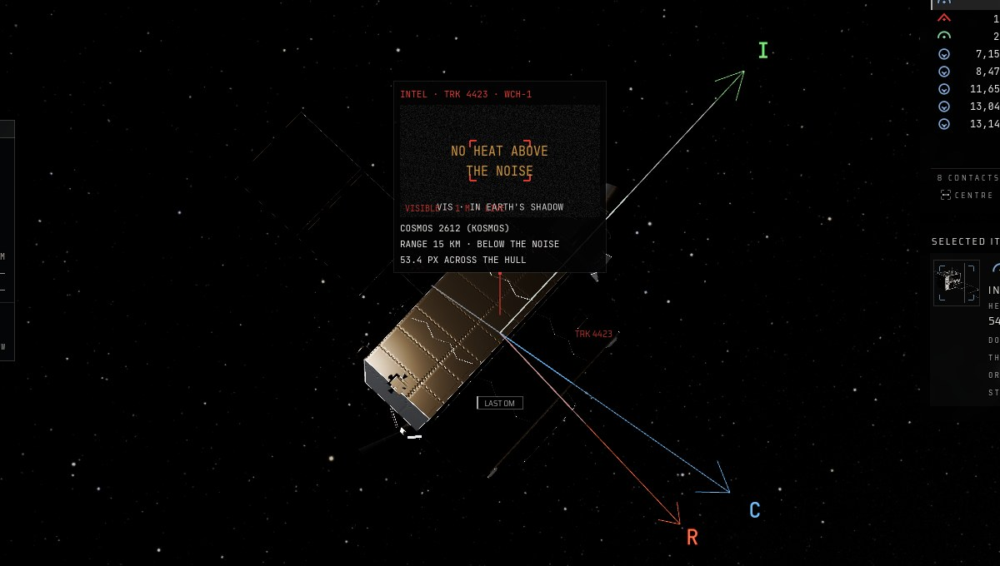
Crowding means all three of these at once: it is parked, you are within 5 km of it, and it can see you. While it is hopping between stops it ignores you.
- The first time, it gives way. It moves 8 km off, to the far side of X36. That takes about 2 hours, then it holds there for 4 hours.
- The second time, it gives way again, to a new spot 8 km off on the far side.
- The third time, it gives up. A 4 m/s burn and it climbs away. Once it is 200 km from X36 it's gone, and you win.
2.4.3When it is left alone
If none of your craft is within 50 km when a stop ends, it moves in: its next stop is half as far from X36. Stay near and it keeps its distance.
2.5Tension and war
The escalation number at the top right of the screen shows how close the crisis is to open conflict. It only ever goes up. At 100 you lose.

| What raises it | Escalation | When |
|---|---|---|
| Each crowding | +5 | Every time you push it away. Three crowdings add 15. |
| Staying too close | +12 an hour | For every hour you stay closer than 1 km to it. |
| It parks too close | +3 | Each time it parks inside X36's 1 km keep-out. |
What happens as it climbs
- At 25 it turns cautious. It gives way one time fewer, and it stops creeping in when you are far away.
- At 50 it leaves early. The next time you crowd it, it goes home at once.
- At 100 it is war. The operation fails, whatever else happened.
What it costs you at the end
| Final escalation | 0 | 15 | 25 | 50 | 100 |
|---|---|---|---|---|---|
| Peace points (of 10) | 10 | 8.5 | 7.5 | 5 | You lose |
Pushing hard wins sooner, because high tension makes it leave early. But every point of escalation costs you score at the end, and too much is war. The sweet spot is between 1 and 5 km: close enough to crowd it, far enough that the hourly +12 never starts.
The event log warns you at 25, 50 and 90.
2.6Three ways to play
There is no single right answer. These three plans all work. They trade score, speed and risk differently.
2.6.1The patient shadow
Close in early and stay 2 to 4 km from Cosmos. Crowd it once at each stop. Tension stays low, your track stays good all game, and you spend a moderate amount of fuel. It is slow, but it scores highest.
2.6.2The hard press
Crowd it at every chance and sit near 1 km. Escalation passes 25, then 50, and it leaves at the next crowding. It is quick and uses the most fuel, and you give up most of the peace points. One slip is war.
2.6.3The guard
Park beside X36 instead of chasing Cosmos. Because you are within 50 km it keeps its distance, and your telescope holds the track. It costs the least fuel at first, but Cosmos never leaves on its own: sooner or later you must go to it.
Three crowdings, a stop apart, only fit into two days if you start early. Get alongside in the first few hours. To try a bold move safely, use Branch from now on the Timeline first (see 5.10).
Getting Started
The title screen, the main screen, and how to control time and the camera.
3.1The title screen
The game opens on the live Earth turning behind the menu. Any key skips the intro.

| Menu item | What it does |
|---|---|
| Start scenario | A new game of CLOSE PASS with the tutorial on. Time starts paused. |
| Continue | Carry on from your save. Greyed out when there isn't one. |
| How to play | A one-page briefing: the goals, the four things you do, and the keys. |
| Settings | Plain or military words, music and sound volume. Remembered between games. |
| Edit · Study · Library | For tinkerers: change the scenario's numbers, test plans, read the sources (see Chapter 10). |
3.1.1Saving
There is one save. The game writes it when you go back to the title screen (Esc with nothing open) and once every game day. Finishing a game deletes it.
3.1.2Plain or military words
Settings › Terms switches between plain words and military terms, for example Listening station or EW console. The game is the same either way. The glossary in Appendix B lists both.
3.2The main screen
Everything happens on one screen. Hover over anything and a card explains it.
 1
2
3
4
5
6
7
8
9
1
2
3
4
5
6
7
8
9
- Menus and search. Every command, with its key. Type in the box to find one.
- Clock and time speed. UTC time, mission time, and how fast time runs.
- Escalation. How close the crisis is to war, 0 to 100.
- Your orders. Plot move, Look, Match orbit. Keys 1 2 3.
- Overview. Every contact, nearest first. Click to select, double-click to centre.
- Selected item. Everything you know about what you clicked: range, whether it sees you, how sure you are.
- Cosmos 2612. Shown as TRK 4423, your track on it: your best guess of where it is.
- The 3-D view. The Earth by day and night, your orbit, the radars as rings on the ground.
- Timeline. The next hours: your burns, Cosmos's closest pass, radar passes, sunlight.
3.3Time
The game starts paused, and time only moves when you let it. One trip round the Earth takes about 95 minutes. Nothing happens while you are paused, so pause whenever you need to think.

| Speed | One real second is | Use it for |
|---|---|---|
| 1× | One second | Watching a burn |
| 60× | One minute | Working near the target |
| 600× | Ten minutes | Coasting to a meeting |
| 3K× | About an hour | Waiting out one of its stops |
| 21K× | About six hours | Long waits |
| 1d× and 7d× | A day, a week | Not needed in CLOSE PASS |
3.4The camera
| Mouse | Does |
|---|---|
| Drag | Turn the view round its focus |
| Right-drag | Slide the view |
| Wheel | Zoom in and out |
| Click | Select a contact |
| Double-click | Focus on it |
| Right-click | Its orders |
| Key | Does |
|---|---|
| W A S D | Turn the view |
| Q E | Zoom out and in |
| F | Close-up on the selection |
| Tab | Focus on the next object |
| Shift | Hold for faster camera keys |
| Esc | Back out of whatever is open |
3.4.1Hover for help

Rest the mouse on any number, button or contact and a card says what it is and what it means for you. When you are unsure about something on the screen, hover over it first.
With military terms switched on (see 3.1.2), the cards for radio and sensor numbers also show the formula behind them.
Your First Game
A winning game of CLOSE PASS, played one move at a time. Start a new game, pause, and follow along.
4.1Get your bearings
Before you move, know where everyone is, and hear Cosmos talk. Once you are within 10 km of it, it stops talking.
1Meet the players
Click X36, then TRK 4423, in the Overview. X36 is 20 km ahead of you. TRK 4423 is Cosmos 2612, 15 km away. Double-click each one to see it.

2Read your goals
There are five goals. Two lose the game: letting it finish, or escalation reaching 100. The rest are points.

3Listen
Open the Listening station and speed up. Its first report comes within about three hours, as a bright stripe at 2,250 MHz.
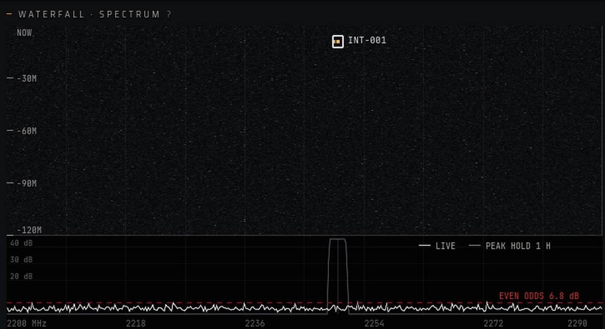
4Identify it
Click the recording, find its direction, and identify it. Now you know who is talking, and your track is sharper. Do it within an hour of the burst.
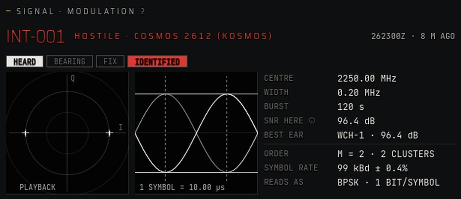
5Wait for it to park
Cosmos is hopping to its first stop. About three hours in, the log says it has parked 2 km behind X36. That is your moment.

4.2Close in
Get alongside it. The planner does the orbital maths; you choose how fast and how much fuel.
6Plot a move
The planner opens on TRK 4423. Check its lamps first: if the track is only known to ±10 km, a radar pass or a look will sharpen it.

7Pick, then burn
BALANCED flies there in 1½ hours for about 2.3 m/s in all. CHEAPEST waits longer for about half that. Either is a sliver of your 260 m/s.

8Coast
The move shows on the map as PLANNED MEETING with a countdown. Slow time down for the last few minutes.

9Look at it
Close in and in sunlight, the telescope shows the hull. In Earth's shadow it sees nothing, so wait for the Sun.

10Match orbit
Arriving isn't stopping. Match orbit cancels the last of your speed so you stay beside it. Stop 1 to 5 km away.

4.3See it off
Crowd it at each stop, follow it when it moves, and the third time it gives up.
11Make sure it sees you
Crowding only counts if its telescope sees you. Check Sees us: a high number means it does. Then the log says it is moving to the far side of X36. Escalation goes up by 5.

12Follow it
It moves 8 km off, to the far side of X36. Once it parks, plot a move to it again and match. For a hop of a few km, a small close move is cheapest (see 5.4).

13Mind the gap
Stay more than 1 km from it. Inside 1 km, escalation climbs by 12 every hour.
14Crowd it a third time
It gives up and climbs away. Once it is 200 km from X36, the operation is complete and the debrief opens (see Chapter 7).

It moved closer to X36? None of your craft was within 50 km when a stop ended, so it took its next stop at half the distance. Nothing happened when you closed in? It only gives way while parked. Wait for the log to say it has parked, then close within 5 km.
Your Tools
Each tool in turn: what it is for, how to use it, and what to watch out for.
5.1Tracks: knowing where it is
You never see Cosmos 2612 directly. You see your track on it: a best guess of where it is, with a size, that gets less sure every minute it isn't seen.
5.1.1The four lines that matter
| Line | What it tells you |
|---|---|
| Range | How far it is from you. |
| Motion | Whether it is closing or opening, and how fast. |
| Sees us | The chance its telescope sees you on each look. Crowding only works when this is high. |
| Fix | How sure you are where it is (±), and how old the last sighting is. Check it before you plan a move. |
5.1.2Colours
Blue is yours. Green is yours to protect (X36). Red is hostile. Yellow is unknown.
5.1.3Losing sight of it
When nothing sees it, the track stays where you last saw it, dashed and fading, with a chip such as Last 2h 14m. After 24 hours unseen the track is dropped.
A track is a belief. ±10 km means you could arrive and find empty space. Listen, look, or wait for a radar pass to sharpen it before you move.
5.2The planner
You say where to go. The planner works out every way there over the next day, under full gravity, and shows you the price of each.

5.2.1Planning a move
- Open it. Select a contact and press 1 or F3. Or right-click the contact and choose Plan intercept.
- Choose where. Under Go to, pick a craft, an orbit, or the Moon.
- Choose the trade between time and fuel (see below).
- Burn. Press Burn now, or set a time and the burn fires by itself.
5.2.2Time or fuel
| Choice | What it does |
|---|---|
| Fastest | Gets there the soonest you can afford. Costs the most. |
| Balanced (default) | A fair trade of time and fuel, counting the stop at the end. |
| Cheapest | Waits and flies longer for the least fuel. Good when you have time. |
At the end of a transfer you coast past the target at a few tenths of a metre a second. Press 3 Match orbit when you get there.
5.3Checking a plan and burning
Before you burn, the planner checks the plan and draws it. A red lamp stops you; an amber one is a warning worth reading.
| Check | When it lights |
|---|---|
| Fuel enough | You can't afford the burn at all. |
| Fuel to stop | You can get there but not stop. Plan a cheaper move. |
| Not too low | The path dips below 122 km, into the air. |
| Arrive ± 10 km | Your track is too vague to aim well. Sharpen it first; under 5 km passes. |
| Seen | Cold, warm or seen: whether Cosmos can see you right now, and when that changes. |
5.3.1Reading the picture
The planned move is drawn in the 3-D view in four styles:
- Soft blue: your orbit now.
- White: the planned path.
- Dashed sand: the orbit you are going to.
- Dashed amber: a way you can't afford.
If a burn can't be flown, the event log says why, for example that there is no path at that time.
5.4Small moves up close
Within a few kilometres you don't plan transfers. You give a small push and watch where it carries you over the next two orbits. Open the Tactical tab in the planner.

5.4.1Orbits don't steer like cars
| Push | What happens |
|---|---|
| Along the orbit (I) | Forward makes you drift back. Speeding up raises your orbit, and a higher orbit is slower. To drift ahead, push backward. |
| Up or down (R) | You swing in an oval round where you were, once an orbit, with no drift. Good for circling a target. |
| Sideways (C) | You swing side to side, crossing back once an orbit. Rarely needed here. |
5.4.2Dragging your orbit
You can also plan a burn by hand. Grab your own orbit line where you want to burn. Drag along it to speed up or slow down, or across it to push out or in. The new orbit swings out in dashed amber with its price. Let go and the burn is set for the next time you pass that point. Right-click or Esc cancels; hold Shift to turn the view instead.
In low orbit, 0.1 m/s along the track moves you about 1.7 km per orbit. Tiny pushes, made patiently, do the work.
5.5The telescope
WATCHMAN-1's telescope is how you see Cosmos for yourself. From far off it is a point of light. Close in, it is a hull you can name. Select a contact and press 2 or I to look; Esc closes the view.
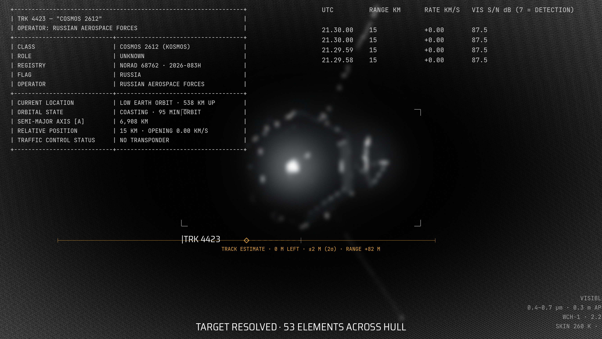
5.5.1When it can see
The telescope only sees a target that is:
- In sunlight. In Earth's shadow there is nothing to see. The Timeline shows when it is lit.
- Not against the Earth. The bright Earth behind it washes it out.
- Close enough. It names a hull inside about 60 km.
5.5.2It works without you
You don't need the view open. Every 10 minutes the telescope looks at everything you track, and each sighting sharpens your track. Close in, it also measures range from how big the hull looks: to about 30 m at 5 km.
Radars see Cosmos only on their passes. In between, your telescope keeps the track good, but only on the sunlit part of each orbit.
5.6The listening station
Cosmos 2612 reports home in short radio bursts. The Listening station, F2, shows each burst arriving live and records it.
5.6.1When it talks
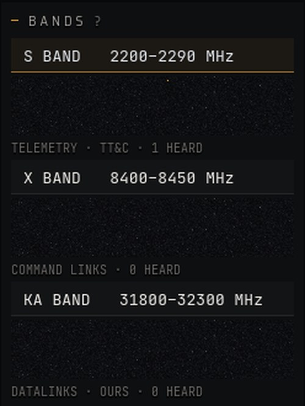
- Every 3 to 6 hours, and once after each move. Each burst lasts 2 minutes.
- Only over Russia, while its ground station can see it, so reports bunch together.
- Never when you are close. It is silent while you are within 10 km.
- Never right after a burn. It is silent for 6 hours after it sees one of your burns.
The station opens on S band, where Cosmos talks.
Listen first. Hear and identify it while you are still 15 km out. Once you close in, it goes quiet.
5.7Identifying a signal
A recording is a clue. Work it within an hour and you know who is talking, and where from.
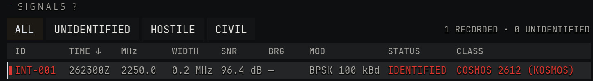
- Click the recording. Wait until the burst has ended. ↑ and ↓ step through the list.
- Find its direction, D. This takes a bearing from your receiver, which sharpens the track you already have.
- Identify it, I. This names its class and side. It needs a clean copy: at least 15 dB.
If the copy is too weak, the hint says so. Wait for a stronger report, or get closer, but not within 10 km. Analyse automatically works each recording as it arrives. It is handy, but you learn nothing.
5.8Being seen
Cosmos watches you with a small infrared telescope. In CLOSE PASS, being seen is mostly good: crowding only works if it can see you.

- Cold: hidden. It almost never sees you.
- Warm: seen now and then.
- Seen: seen on most looks.
The quickest check is Sees us in the Selected item. If it reads 0 %, crowding won't count: wait for a better angle.
5.8.1Reading the forecast
| Line | What it tells you |
|---|---|
| Your heat now | Hidden, Detected or Seen, with the range it sees you best from. |
| In shadow | Whether you are in Earth's shadow now, and when the Sun comes back. |
| Quiet burn | When a burn would go unseen. “None” means any burn this orbit shows. |
| Hidden for | How long you have been out of sight. |
- Being seen helps when crowding. Park within 5 km while it sees you, and it gives way.
- Burns are seen. If it sees you burn, it goes quiet on the radio for 6 hours. Listen first, then move.
- Shadow hides you. Arriving in Earth's shadow may not count until the Sun comes round.
5.9Radars and your track
Five real ground radars fix Cosmos to within metres, but only while it passes overhead. Between passes, your track drifts.
| Radar | Site and reach |
|---|---|
| PFISR · Alaska | Poker Flat. Looks high: from 45° up, out to 3,000 km. |
| MSR · Texas | LeoLabs Midland. From 30° up, out to 3,000 km. |
| ASR · Arizona | LeoLabs Arizona. From 20° up, out to 3,000 km. |
| KSR · New Zealand | LeoLabs Kiwi. From 40° up, out to 1,500 km. |
| FENCE · Kwajalein | The Space Fence. From 20° up, out to 3,000 km. |
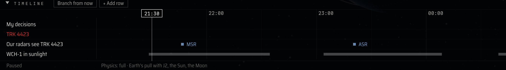
5.9.1How a track lives
- It sharpens with each sighting: a radar pass, a telescope look or a radio bearing.
- It widens between sightings, as small unknowns grow. Unseen burns widen it more.
- It is dropped after 24 hours unseen, or when it is too vague to say where it is.
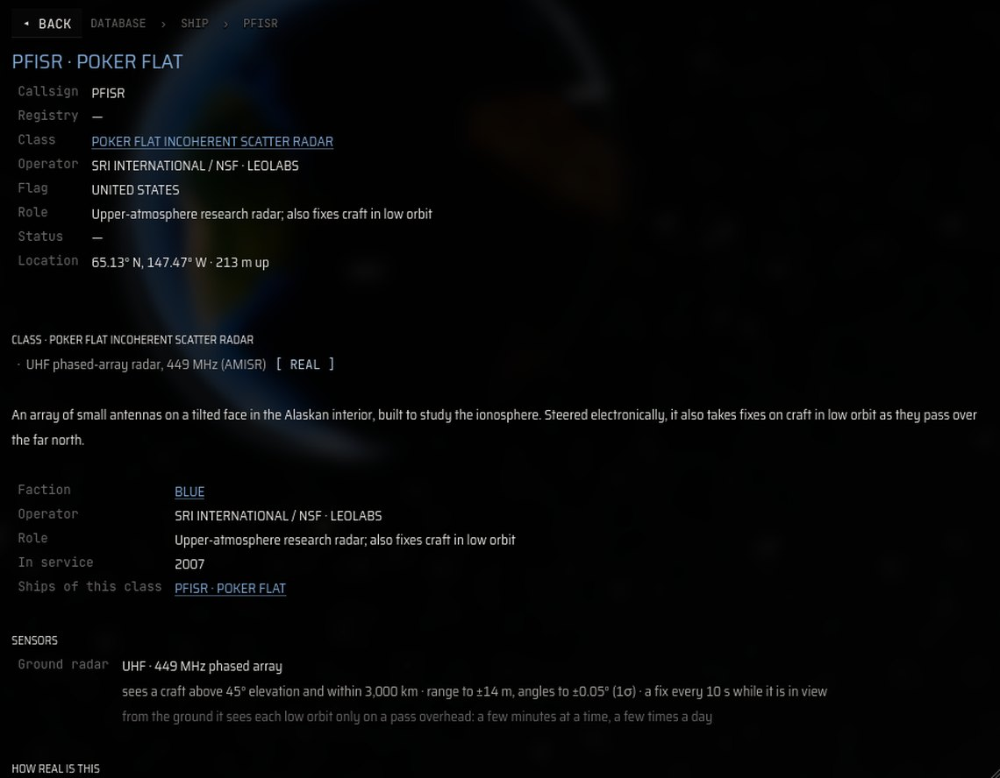
Each radar has its own page in the Database, F5: where it is, how high it looks, how far it reaches, and the source for each number.
Arrive just after a radar pass and your track is at its sharpest. After a long gap, check the ± before you move.
5.10The timeline
Along the bottom of the screen is the Timeline: the next hours, on the same clock as everything else. It tells you when to act.
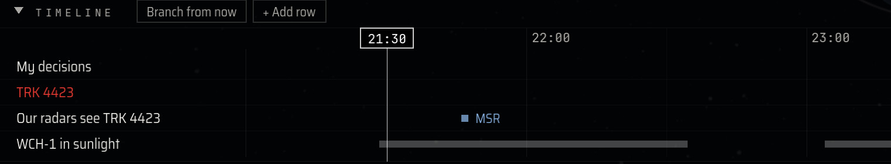
| Row | What it shows |
|---|---|
| My decisions | Burns you have set, and the move the planner has open. |
| TRK 4423 | Its closest pass to anything, such as Closest · 2 km · X36. |
| Our radars see TRK 4423 | Each radar pass. |
| WCH-1 in sunlight | When you are lit. The gaps are Earth's shadow. |
5.10.1Adding rows
+ Add row adds up to nine more rows: distances, heights, sunlight, when each radar sees each craft, and when you are within 1, 5 or 10 km of Cosmos. The most useful one is WCH-1 within 5 km of TRK 4423: it shows exactly when you are crowding.
5.10.2Branching
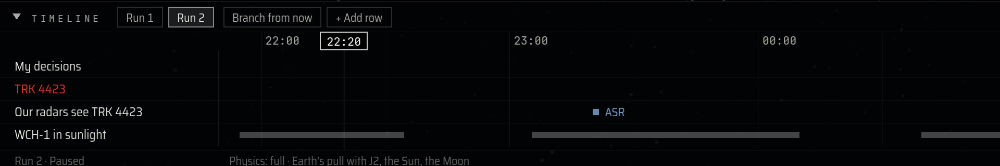
Branch from now saves this moment as Run 1 and plays on as Run 2. Click a run's tab to go back exactly where you left it. Branch before a big move. Branches aren't saved to disk.
5.10.3Events
The event log at the bottom left uses four levels. Warning: act now. Caution: worth knowing, such as losing sight. Nominal: good news, for example it gave way. Advisory: for the record.
5.11Other windows
You can win without these, but they answer the questions the main screen doesn't.

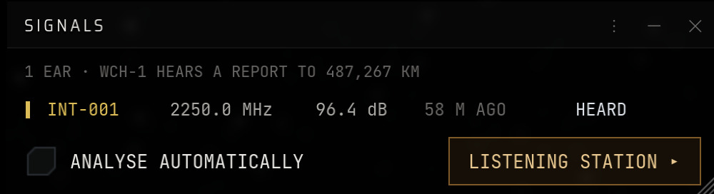

Solar system (Stations › Solar system) is a live chart of the Sun and planets, with each one's distance and the cheapest trip there. The sums: click SNR here ⓘ in the Listening station to see the radio maths, term by term.
Playing Well
Twelve things good players learn, most of them the hard way.
- Listen first. It stops talking once you are within 10 km or it sees you burn. Identify it from 15 km out.
- Move when it parks. A target that is mid-hop is a moving goal. Wait for “has parked”, then plan.
- Always match. A transfer passes by. Forget Match orbit and you sail past at a metre a second.
- Use the sunlight. Your telescope only sees a lit target. The Timeline's sunlight row tells you when.
- Be seen when crowding. Check Sees us. Arriving in shadow may not count until the Sun comes round.
- Check the fix. ±10 km means you may arrive somewhere empty. Sharpen the track first.
- Move cheap and early. Small moves early cost less than big ones late. Let the orbit do the work.
- Keep 1 to 5 km. It is the sweet spot: it gives way, and tension rises only 5 at a time.
- Branch before big moves. Try it; if it goes wrong, go back to Run 1.
- Stay within 50 km. Out of reach, it creeps toward X36 and can enter the keep-out.
- Pick the right speed. 60× near it, 600× coasting, 3K× to wait out a stop. Pause to think.
- Mind the clock. Three crowdings, a stop apart, fit in two days only if you start early.
The Debrief
When the operation ends, the view holds on the deciding moment. Then the debrief shows what happened and how you scored.
7.1What it shows
| Part | Contents |
|---|---|
| The result | The outcome, and the one line that decided it. |
| Score / 100 | Each goal's points, the final escalation, and how long it took. |
| What happened | A replay, and every event about Cosmos. Click a line to jump there. |
| Advice | One tip for each goal you missed. |
7.2The replay
X36 sits in the middle with its 1 km keep-out ring. Your path is blue, Cosmos's is red, and the closest moment is ringed. Play runs the whole mission in 20 seconds; Closest jumps to the closest moment. The wheel zooms and dragging moves the view.
Leaving the debrief ends the game and deletes the save.
Physics You'll Feel
Everything in xGEO is computed from real physics. You don't need the equations, but these six ideas explain what you see.
8.1Falling round the Earth
An orbit is a fall that keeps missing the ground. At 540 km you move at 7.6 km/s and go round in 95 minutes. Everything near you falls the same way, so up close things barely move relative to each other.
8.2Faster means slower
Push forward and you climb on the far side of the Earth. A higher orbit takes longer, so you end up behind. To catch something ahead of you, slow down first.
8.3Fuel is speed
Fuel is counted as the change in speed it can buy, called Δv. WATCHMAN-1 has about 260 m/s. A move to a craft 15 km away costs 2 or 3 m/s. Going to a geostationary orbit would cost thousands.
8.4Light and shadow
Up to a third of each orbit is in the Earth's shadow. A telescope sees by reflected sunlight, so in shadow a satellite vanishes. Infrared sees heat, which fades more slowly.
8.5Radio fades with distance
Twice as far means a quarter as strong. Whether you hear a burst depends on power, antennas, distance and noise. Identifying it needs a clean copy, 15 dB above the noise.
8.6Knowing isn't seeing
Your track is a best estimate with an honest size. Lose sight and the ring grows; a radar pass or a look shrinks it. The Earth's bulge and the Sun and Moon all pull, so paths aren't perfect ellipses.
Problems and Answers
The usual snags, and what to do about them.
The F keys do something else
Click inside the game once. The same windows are also on the Stations menu.
Match orbit is grey
Select a contact and get within 5,000 km of it. Hover over the button: the card says what is missing.
I can't hear anything
Reports come every 3 to 6 hours, only over Russia, and never while you are within 10 km. Run at 600× and watch the waterfall.
Identify won't work
Wait for the burst to end. It needs 15 dB and must be less than an hour old.
The telescope sees nothing
The target is in shadow, or the Earth is behind it. Wait for the sunlight row on the Timeline.
I crowded it and nothing happened
It must be parked, you must be within 5 km, and it must see you (Sees us).
The planner says it can't
Nothing in the next day is affordable, or every path dips too low. Try another target, or wait.
The game is slow
Close windows you don't need, turn off ship shadows, or use a smaller browser window.
Where is my save?
Use Continue on the title screen. The save lives in your browser's storage for this site.
I found a bug
Use Report a bug on the xGEO site. Say what you did, what you expected, what happened, and the mission time.
It closes a menu; cancels an orbit drag; leaves a close-up; closes the telescope; closes the newest window; and, with nothing open, saves and goes to the title screen.
For Tinkerers
xGEO is a simulation first. Three pages on the title screen let you change the numbers and test your plans.
10.1Edit
Change the scenario's main numbers, then press Play edited. The numbers come in five groups:
| Group | What you can change |
|---|---|
| Start | Where WATCHMAN-1 and Cosmos start, the catalogue error, the operation's length. |
| WATCHMAN-1 | Propellant, exhaust speed, telescope size. |
| Cosmos 2612's behaviour | How close counts as crowding, how far it evades, how many times, when it feels unwatched, its closest approach. |
| Rules and tension | The keep-out, how good a track must be, tension per crowding and per hour, when it leaves, when it's war. |
| Score weights | The points for each of the five goals. |
10.2Study
Play each plan many times (Do nothing, Shadow, Guard) and compare how often each wins. Each run redraws Cosmos's habits, so luck shows up. Study is in the desktop program only.
10.3Library
Every source the numbers rest on, with why it was chosen. In the game it is under Help.
Start scenario always plays the scenario as published; only Play edited uses your changes. And a study tells you which plan does better in this model, not what would happen in real life.
10.4Real and invented
ICEYE-X36 and Cosmos 2612 are real satellites, flown from their public orbits and published specifications. The five ground radars are real sites. WATCHMAN-1 is invented, loosely modelled on the US GSSAP inspectors, and what happens in the game is fiction. Their operators have not reviewed or endorsed this game.
xGEO Core, the engine under the game, is open source. Its Research Edition describes every model and the checks that hold it to its sources. Both are on the xGEO site.
Keys and Cheat Sheet
| Key | Does |
|---|---|
| Space | Pause / resume |
| [ ] | Slower / faster |
| 1 2 3 | Plot move · Look · Match orbit |
| F1 | Campaign |
| F2 | Listening station |
| F3 | Planner |
| F4 | Overview |
| F5 | Database |
| F7 | Thermal forecast |
| L | Map layers |
| I | Telescope |
| F | Close-up on the selection |
| Tab | Next object |
| WASD QE | Turn and zoom the view |
| Esc | Back, close, or the menu |
| Listening station | Does |
|---|---|
| ↑ ↓ | Pick a recording |
| D | Find direction |
| I | Identify (needs 15 dB) |
| B | Next band |
A winning order
- Click X36, then TRK 4423 in the Overview.
- F2, and ] to 600×: wait for its report.
- Click the recording, then D and I.
- Wait for “has parked”.
- Select TRK 4423, 1, Balanced, Burn now.
- 3 Match orbit 1 to 5 km from it.
- It gives way: plot and match again.
- The third crowding: it leaves.
Tension
| +5 | Each crowding |
| +12 / h | You inside 1 km of it |
| +3 | It parks inside 1 km of X36 |
| 25 · 50 · 100 | Cautious · leaves · war |
Score
| 40 | It leaves |
| 20 | Kept off X36 |
| 20 | A good track |
| 10 | Fuel saved |
| 10 | No war |
Glossary
Settings › Terms switches between plain words and military ones. Both are here.
- 2σ (two sigma)
- A size that holds the truth most of the time. Track rings and Fix use it.
- Apogee · perigee
- The highest and lowest points of an orbit.
- Bearing
- The direction a signal came from.
- BPSK · QPSK
- Ways of sending bits by shifting a radio wave. Count the dot clusters to tell them apart.
- Contact · track
- Something you know is there, and your estimate of where it is.
- Crowding
- Parking within 5 km of Cosmos while it is parked and sees you.
- Custody
- Keeping a good track: sure, and right, to within 1 km.
- dB
- A ratio on a log scale. +3 dB is double, +10 dB ten times.
- DF
- Direction finding: taking a bearing on a signal.
- Δv (delta-v)
- The change in speed you can still make: your fuel, in m/s.
- EMCON
- Emission control. Quiet: you only listen. Loud: you transmit.
- Escalation
- How close the crisis is to open conflict. 100 ends it.
- EW console
- The military name for the Listening station.
- In-track · radial · cross-track
- Along the orbit · up and down · sideways. I, R and C.
- Keep-out
- The space kept clear round a craft. X36's is 1 km; Cosmos's is 5 km.
- Link budget
- The sum of gains and losses from a transmitter to a receiver.
- Match orbit
- The burn that cancels your speed relative to a target, so you stay beside it.
- NORAD number
- A satellite's number in the public catalogue. Cosmos 2612 is 68762.
- RPO
- Rendezvous and proximity operations: one craft working close to another.
- SAR
- Synthetic aperture radar: how X36 images the ground through cloud.
- SIGINT
- Signals intelligence: listening to other people's radio.
- SNR
- Signal-to-noise ratio: how far a signal stands above the hiss.
- Spectrum · waterfall
- Signal strength by frequency now; and the same over time.
- TT&C
- Telemetry, tracking and command: a satellite's radio link home.
- UTC · Z
- The clock satellites run on. 21:00Z is 21:00 UTC.
The Tutorial
A new game starts with the tutorial card at the top left. Each step ends when you have done it. In the tutorial Cosmos leaves at the second crowding, so a full run is shorter.

| Steps | What you learn |
|---|---|
| 1–2 | Turn and slide the view |
| 3–6 | Find X36 and TRK 4423; the Ours tab |
| 7–10 | Database, Campaign, Map layers, Terms |
| 11 | Let time run at 60× |
| 12–16 | Listen, hear it, identify it, the link budget, Signals |
| 17–18 | Plot a move and burn |
| 19–20 | Hover over it; look through the telescope |
| 21 | Match orbit within 5 km |
| 22 | Right-click it: every option |
| 23 | Follow it and match again |
| 24 | Let time run to the debrief |
xGEO Live Operator's Handbook · Alpha 0.5, build 11 · November 2026 · © 2026 Kevin Williamson. All rights reserved.